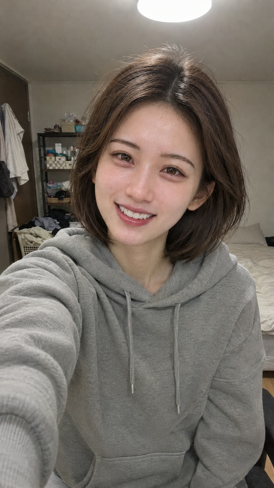
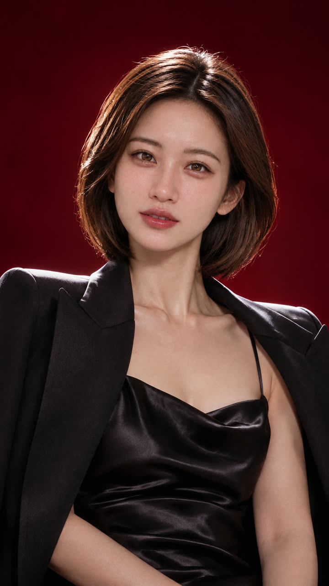
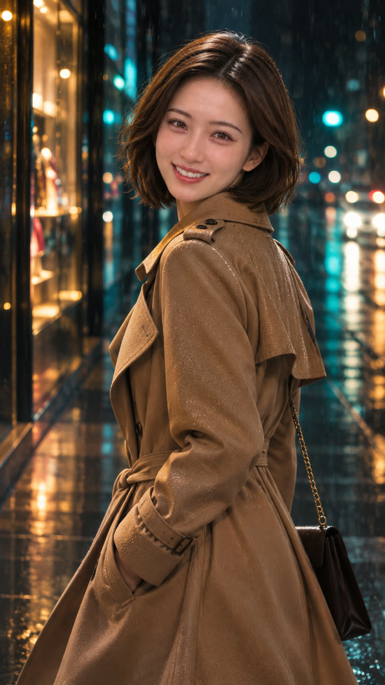
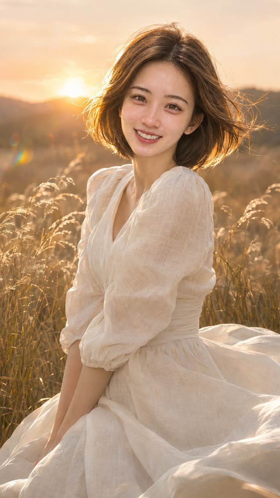
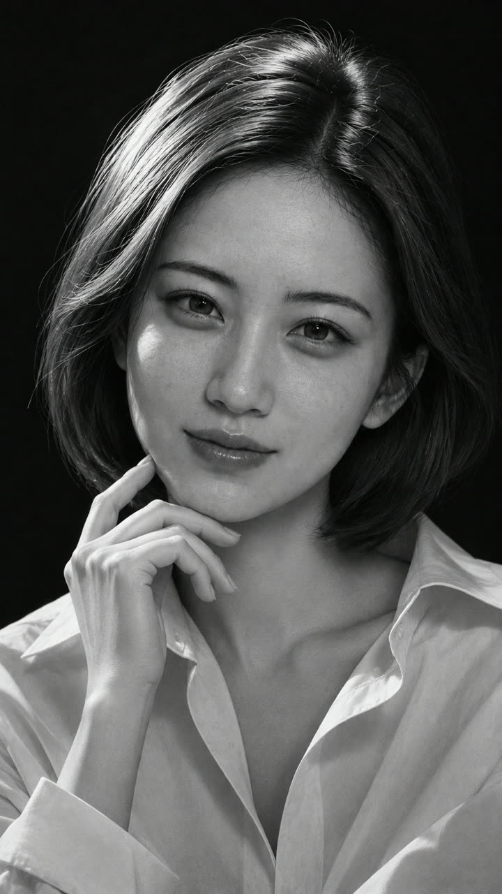

AI 자료실 No.005
셀카 한 장으로 화보 네 장 — 그대로 쓰는 지시문 4개와 전후 사진
AI My Ground 쇼츠에서 보여 드린 화보 네 장을 만든 순서 그대로입니다. 사진관도 보정 앱도 없이, 셀카 한 장과 문장 한 줄이면 됩니다.
직접 만들어 보고 정리한 자료입니다. 내 작업물에는 자유롭게 쓰셔도 됩니다. 다만 이 지시문과 내용을 그대로 옮겨 다른 자료·콘텐츠로 다시 배포하는 것은 삼가 주세요. 사진은 본인 사진이나 사용 허락을 받은 사진만 쓰세요.
핵심 살펴보기
- 얼굴이 잘 보이는 셀카 한 장을 이미지 만드는 AI 채팅창에 올립니다.
- 아래 지시문 중 하나를 그대로 붙여 넣습니다. 얼굴 유지 문장이 빠지면 다른 사람이 나옵니다.
- 조명·장소 문장만 바꾸면 화보가 계속 나옵니다.
먼저, 이런 결과가 나옵니다
왼쪽 셀카 한 장으로 오른쪽 네 장을 만들었습니다. 보정 앱은 쓰지 않았습니다.





준비
1. 셀카 고르기
- 얼굴이 정면에 가깝고 선명한 사진이 좋습니다. 조명이 어두운 방 사진이어도 괜찮습니다.
- 한 명만 나온 사진을 고르세요. 여러 명이 있으면 누구를 바꿀지 헷갈립니다.
- 선글라스·마스크처럼 얼굴을 가리는 사진은 피하세요.
성공 확인 눈·코·입이 또렷하게 보이면 됩니다.
올리기
2. 이미지 만드는 AI 채팅창에 사진 올리기
- 사진을 만들 수 있는 AI 채팅창(예: 챗GPT)을 엽니다.
- 입력칸의 + 버튼이나 클립 모양으로 셀카를 올립니다.
- 아직 보내지 말고 다음 단계의 지시문을 같이 붙여 넣습니다.
이 자료의 결과는 GPT 이미지 모델로 만들었습니다. 다른 서비스는 얼굴 유지 정도가 다를 수 있습니다.
핵심
3. 지시문 붙여 넣기 — 화보 네 종류
실제로 위 결과를 만든 문장입니다. 영어로 넣었을 때 결과가 가장 정확했습니다. 첫 두 문장(얼굴 유지)은 절대 빼지 마세요.
잡지 표지 스튜디오 — 그대로 복사
Use my photo only for my identity. Keep the exact same person as the reference photo: identical face shape, eyes, nose, lips, skin tone and hairstyle. Do not change their identity. The result must look like a real high-end professional fashion photoshoot by a top photographer, dramatically more beautiful than the selfie, while clearly the same person. Vertical 9:16, photorealistic, no text, no logos. Shot: high-fashion magazine cover style studio portrait. Elegant black satin slip dress with a tailored blazer draped over the shoulders, polished makeup. Dramatic single key light, deep crimson gradient backdrop, sharp rim light on hair and shoulders, confident pose with chin slightly raised, medium shot.
비 오는 밤거리 — 그대로 복사
Use my photo only for my identity. Keep the exact same person as the reference photo: identical face shape, eyes, nose, lips, skin tone and hairstyle. Do not change their identity. The result must look like a real high-end professional fashion photoshoot by a top photographer, dramatically more beautiful than the selfie, while clearly the same person. Vertical 9:16, photorealistic, no text, no logos. Shot: cinematic night street editorial in the rain. Long camel trench coat on a wet city street at night, neon shop lights and bokeh reflected on the wet asphalt, light rain drops visible, shallow depth of field, moody teal and amber grading like a film still, three-quarter shot, looking over the shoulder at the camera.
노을 진 들판 — 그대로 복사
Use my photo only for my identity. Keep the exact same person as the reference photo: identical face shape, eyes, nose, lips, skin tone and hairstyle. Do not change their identity. The result must look like a real high-end professional fashion photoshoot by a top photographer, dramatically more beautiful than the selfie, while clearly the same person. Vertical 9:16, photorealistic, no text, no logos. Shot: golden hour outdoor editorial. Flowing white linen dress in a tall golden grass field at sunset, warm backlight glowing through the hair, wind moving the dress and grass, dreamy lens flare, soft film colors, knee-up shot.
흑백 스튜디오 — 그대로 복사
Use my photo only for my identity. Keep the exact same person as the reference photo: identical face shape, eyes, nose, lips, skin tone and hairstyle. Do not change their identity. The result must look like a real high-end professional fashion photoshoot by a top photographer, dramatically more beautiful than the selfie, while clearly the same person. Vertical 9:16, photorealistic, no text, no logos. Shot: classic black-and-white studio portrait, monochrome only. White shirt with a loosened collar, hand lightly touching the jaw, strong contrast Rembrandt lighting, deep shadows, fine film grain, timeless gallery-quality close-up portrait.
성공 확인 얼굴은 내 얼굴 그대로이고, 옷·조명·장소만 화보처럼 바뀌면 됩니다.
응용
4. 나만의 화보 만들기
위 문장에서 Shot: 뒤만 바꾸면 됩니다. 아래 칸에서 [대괄호]만 채워 보세요.
[ ]만 바꿔서 쓰기
Use my photo only for my identity. Keep the exact same person as the reference photo: identical face shape, eyes, nose, lips, skin tone and hairstyle. Do not change their identity. The result must look like a real high-end professional fashion photoshoot by a top photographer, dramatically more beautiful than the selfie, while clearly the same person. Vertical 9:16, photorealistic, no text, no logos. Shot: [장소, 예: a rooftop at blue hour]. [옷, 예: an oversized white suit]. [조명, 예: soft window light]. [구도, 예: medium shot].
장소·옷·조명을 한글로 써도 되지만, 영어로 쓰면 더 정확했습니다.
완성 후 이 세 가지만 확인하세요
- 눈·코·입 모양이 원래 내 얼굴과 같은지
- 손가락 개수·귀걸이·목걸이처럼 작은 곳이 이상하지 않은지
- 배경에 이상한 글자나 로고가 생기지 않았는지
자주 묻는 것
얼굴이 자꾸 다른 사람처럼 나와요
지시문 첫 두 문장이 빠졌는지 확인하세요. 그래도 다르면 같은 대화에서 "얼굴을 원본 사진과 똑같이 다시"라고 한 번 더 요청하세요.
돈이 드나요?
서비스마다 무료 사용량이 다르고 바뀔 수 있습니다. 사용 전에 각 서비스의 요금 안내를 확인하세요.
다른 사람 사진으로 해도 되나요?
본인이나 허락받은 사람 사진만 쓰세요. 남의 얼굴로 화보를 만들어 올리면 초상권 문제가 생길 수 있습니다.